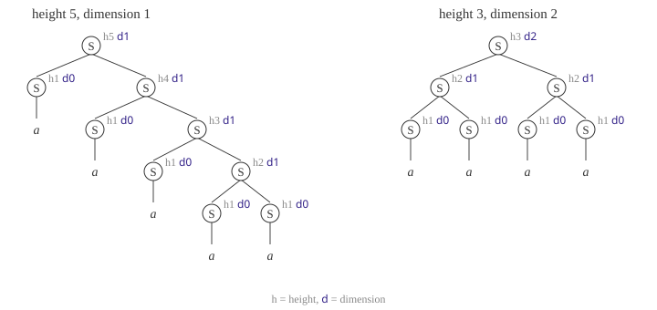

Draft — This article is a work in progress. Content may change.
Solving weighted grammars is a three-part series adapted from chapter 5 of my dissertation. This is part 3.
- Weighted Grammars as Algebraic Systems: the problem, and why fixpoint iteration can be slow
- Solving Linear Grammars Exactly: an exact solver for (right-)linear grammars via the matrix star
- Newton's Method for Weighted Grammars: Newton's method, a hybrid solver that splits the grammar into strongly connected components, and code
Background: semirings and weighted context-free grammars. Sequel: from weighted grammars to Dyna programs. Proofs, side examples, and background are tucked into collapsible blocks (▸) for readers who want more depth.

Recall the setup from part 1: a weighted context-free grammar $\mathcal{G}$ over a semiring $\Values$ has rules $X \xrightarrow{\w} Y_1 \cdots Y_K$ with weights $\w \in \Values$, and the value $\sem{X}$ of a nonterminal $X$ is the total weight of its derivations, which is the least solution of the fixpoint equations
$$ \sem{X} = \bigoplus_{(X \xrightarrow{\w} Y_1 \cdots Y_K) \in \mathcal{G}} \w \otimes \sem{Y_1} \otimes \cdots \otimes \sem{Y_K}, $$
with $\sem{a} = \semione$ for each terminal $a$. As in the rest of the series, the semiring product ⊗ is drawn as $\circ$, semiring values are magenta, and we assume a commutative semiring.
Newton's method
Our $\Newton$ method is an accelerated solver for fixpoint problems, based on Esparza et al.'s (2007) generalization of Newton's algorithm for solving fixpoint equations over a semiring. What is interesting about $\Newton$ relative to fixpoint iteration is that it can sum infinitely many derivations in a single iteration. More specifically, each iteration sums the set of derivations by increasing dimension (defined below) rather than by its height as in fixpoint iteration (part 1).In our setting, we use $\Newton$ to sum over semiring-weighted derivations; thus, our presentation will differ from that of Esparza et al. (2007), which takes Newton's method as their starting point. Newton's method for solving a fixpoint equation $\boldsymbol{x} = \boldsymbol{f}(\boldsymbol{x})$ over the reals, where $\boldsymbol{x} \in \mathbb{R}^D$ and $\boldsymbol{f}: \mathbb{R}^D \to \mathbb{R}^D$, is an iterative scheme with the update rule $\boldsymbol{x}^{(t+1)} \gets \boldsymbol{x}^{(t)} + (\boldsymbol{I}-\boldsymbol{J}^{(t)})^{-1} (\boldsymbol{f}(\boldsymbol{x}^{(t)}) - \boldsymbol{x}^{(t)})$, where $\boldsymbol{J}^{(t)}$ is the Jacobian matrix of partial derivatives of $\boldsymbol{f}$ evaluated at $\boldsymbol{x}^{(t)}$. Generalizing to the semiring setting requires retrofitting Newton's method to accommodate semirings that do not have subtraction, division, or differentiation. For our purposes, such retrofitting would be a distraction; we refer the reader to any of the following works, which discuss the connection: Esparza et al. (2007), Reps et al. (2017), Luttenberger (2009). We found the presentation in Schlund (2016) the clearest.
Etessami and Yannakakis (2009) showed that fixpoint iteration could converge exponentially slower than Newton's method. On the grammar $S \xrightarrow{0.5} S\,S$, $S \xrightarrow{0.5} a$ from part 1, fixpoint iteration needs roughly $2^k$ iterations to gain $k$ bits of precision, whereas Newton's method gains one bit of precision per iteration:

Definition. The dimension $\Dim{\deriv}$ of a derivation $\deriv$ is defined inductively. Suppose $\deriv$ is rooted at a rule $X \xrightarrow{\w} Y_1 \cdots Y_K$, and let $\deriv_1, \ldots, \deriv_m$ be its subderivations for the nonterminal children (terminal children are ignored).
- If $m = 0$: $\Dim{\deriv} \overset{\text{def}}{=} 0$.
- If $m \ge 1$: Let $d = \max(\Dim{\deriv_1}, \ldots, \Dim{\deriv_m})$. If the argmax is unique (i.e., no ties for the max), $\Dim{\deriv} \overset{\text{def}}{=} d$. Otherwise, $\Dim{\deriv} \overset{\text{def}}{=} d+1$.
Please refer to the figure below for an illustration.This is a variant of the Horton–Strahler number of a tree. See Esparza, Luttenberger, and Schlund (2014) for a history of Strahler numbers and their connection to Newton's method.

The dimension of a derivation is always $\le$ its height, but it is often $\ll$. The set of derivations with dimension $d$ can be infinite. In contrast, the set of derivations with fixed height is finite. For example, each derivation in the geometric series grammar ($S \xrightarrow{0.5} S\,a$, $S \xrightarrow{1} b$) has dimension $0$. What is remarkable about the set of derivations with dimension $\dPP$ is that there is an efficient linear structure relating it to the sets of derivations with dimensions $\dLE$, $\dEQ$, and $\dLT$. This allows us to grow the set of derivations we have summed over much more quickly using a specialized linear solver (part 2).

Algorithm 1 $\Newton$: Solve grammar $\mathcal{G}$ by Newton's method
$$ \begin{aligned} &\textbf{def } \Newton(\mathcal{G}): \\ &\quad \langle \Chart, \Change \rangle \gets \NewtonInit(\mathcal{G}) \\ &\quad \textbf{while } \text{true}: \\ &\quad\quad \langle \NextChart, \NextChange \rangle \gets \NewtonStep(\mathcal{G}, \Chart, \Change) \\ &\quad\quad \textbf{if } \NextChart = \Chart: \textbf{break} \\ &\quad\quad \langle \Chart, \Change \rangle \gets \langle \NextChart, \NextChange \rangle \\ &\quad \textbf{return } \Chart \\[8pt] &\textbf{def } \NewtonStep(\mathcal{G}, \Chart, \Change): \\ &\quad \NextChart \gets \Chart \doplus \Change \\ &\quad \NextChange \gets \NewGrammar \\ &\quad \textbf{for } (X \xrightarrow{\w} Y_1 \cdots Y_K) \in \mathcal{G}: \\ &\quad\quad \Comment{\text{Base case: combine at least two derivations with dimension } \dEQ} \\ &\quad\quad \textbf{for } 1 \le i \lt j \le K: \\ &\quad\quad\quad \val \gets \w \dotimes \NextChart[Y_{[:i)}] \dotimes \Change[Y_i] \dotimes \Chart[Y_{(i:j)}] \dotimes \Change[Y_j] \dotimes \Chart[Y_{(j:]}] \\ &\quad\quad\quad \AddRule (X \xrightarrow{\val} \varepsilon) \textbf{ to } \NextChange \\ &\quad\quad \Comment{\text{Recursive case: derive } \dPP \text{ derivations by combining}} \\ &\quad\quad \phantom{\triangleright}\ \color{grey}{\text{one } \dPP \text{ derivation with } \dLE \text{ derivations}} \\ &\quad\quad \textbf{for } k \in [1{:}K] \textbf{ where } Y_k \text{ is a nonterminal}: \\ &\quad\quad\quad \val \gets \w \dotimes \NextChart[Y_{[:k)}] \dotimes \NextChart[Y_{(k:]}] \\ &\quad\quad\quad \AddRule (X \xrightarrow{\val} Y_k) \textbf{ to } \NextChange \quad \Comment{Y_k \text{ is the single unknown}} \\ &\quad \textbf{return } \langle \NextChart, \solveLinear{\NextChange} \rangle \quad \Comment{\text{Solve with the linear solver (part 2)}} \\[8pt] &\textbf{def } \NewtonInit(\mathcal{G}): \\ &\quad \Comment{\text{Initial set of new derivations}} \\ &\quad \Chart \gets \NewGrammar;\ \NextChange \gets \NewGrammar \\ &\quad \textbf{for } (X \xrightarrow{\w} Y_1 \cdots Y_K) \in \mathcal{G} \\ &\quad\quad\quad \textbf{where } \text{at most } 1 \text{ of } Y_1, \ldots, Y_K \text{ is a nonterminal}: \\ &\quad\quad \AddRule (X \xrightarrow{\w} Y_1 \cdots Y_K) \textbf{ to } \NextChange \\ &\quad \textbf{return } \langle \Chart, \solveLinear{\NextChange} \rangle \quad \Comment{\text{Solve with the linear solver (part 2)}} \end{aligned} $$
We provide pseudocode for $\Newton$ in Algorithm 1.Our pseudocode follows Schlund (2016, Definition 3.9), which is for context-free grammars. Here, $\Chart[Y_{(i:j)}]$ is shorthand for the product $\Chart[Y_{i+1}] \otimes \cdots \otimes \Chart[Y_{j-1}]$, and $Y_{[:i)}$ and $Y_{(j:]}$ are the children before position $i$ and after position $j$. Terminals have value $\semione$ in $\Chart$ and $\NextChart$ and $\semizero$ in $\Change$. $\NextChange$ is a grammar: the base case adds rules $X \xrightarrow{\val} \varepsilon$ whose weights are constants from earlier iterations, and the recursive case adds rules $X \xrightarrow{\val} Y_k$ in which the nonterminal $Y_k$ is the single unknown, so $\NextChange$ is a linear grammar. (Collecting the constants on both sides of $Y_k$ into one weight $\val$ reorders the product; this is where we use commutativity.) The high-level picture of $\Newton$ is much like semi-naive forward chaining: $\Newton$ tracks its analogs of $\Chart$ and $\Change$, except here $\Chart$ is the set of dimension $\dLT$ derivations, and $\Change$ is the set of dimension $\dEQ$ derivations. To efficiently determine the values for all $\dPP$ derivations, $\Newton$ solves a linearized grammar.
Part 2 discusses solving the linear subproblems. Unfortunately, not all subproblems $\NextChange$ can be solved exactly and efficiently for all semirings; important tractable special cases include commutative semirings and cases where the subproblems are either left linear or right linear. Other cases are discussed in the literature (e.g., Esparza et al., 2007; Schlund, 2016; Reps et al., 2017). We note that fixpoint iteration methods are always available for (approximately) solving $\NextChange$; however, fixpoint iteration may not converge quickly (or at all).
As noted in other work on Newton's method (e.g., Schlund, 2016), decomposing the grammar into strongly connected components can speed the algorithm up considerably. Our hybrid algorithm (below) speeds up Newton's method in this way.
We argue for the correctness of $\Newton$ in the following proposition.
Proposition. On iteration $d$ of Algorithm 1, the value of $\Chart$ is the total value of derivations of dimension $\dLT$, and the value of $\Change$ is the total value of derivations of dimension $\dEQ$.

Proof (sketch)
We first argue that the value $\NextChange$ returned by the call to $\NewtonStep$ is precisely the sum of dimension $\dPP$ derivations. The figure above illustrates how to build dimension $\dPP$ derivations inductively from the set of dimension $\dEQ$ derivations, the set of dimension $\dLE$ derivations, and the set of $\dLT$ derivations.
We argue that our scheme for creating new derivations generates derivations of dimension $\dPP$. According to the definition of dimension, to create a dimension $\ge d\!+\!1$ derivation, we need to combine at least two $\dEQ$ derivations. That is why the base case of $\NewtonStep$ combines at least two $\dEQ$ derivations; this is depicted as the rule connecting at least two adjacent $\dEQ$ derivations; this step creates a subderivation with dimension equal to ${\cPP d\!+\!1}$. Now, because all subderivations that can combine along the spine (the path up to the root of the derivations) of the new derivation have dimension $\dLE$, the new derivation has dimension $\dPP$; we see this in the recursive case of $\NewtonStep$. Thus, the dimension of the new derivation is precisely dimension $\dPP$. To ensure that the enumeration of $\dPP$ is exhaustive, the grammar $\NextChange$ includes every rule that can combine the $\dLE$ subderivations and the base case of at least two $\dEQ$ subderivations. The grammar $\NextChange$ is a compact encoding of the value of this potentially infinite set of $\dPP$ derivations. Its solution is found by calling a specialized solver (part 2) for grammars with linear rules.
In $\NewtonStep$, we see that $\NextChart$ is the sum of $\Chart$ and $\Change$, and then $\NextChart$ overwrites $\Chart$. Thus, at iteration $d$, $\Chart$ is the total value of all derivations with dimension $\dLT$. $\square$
Hybrid algorithm
This series has provided several algorithms that each work best under different conditions. This section provides a hybrid algorithm that tries to use the best algorithms available to solve a given grammar $\mathcal{G}$. If $\mathcal{G}$ is acyclic, it can be solved efficiently in a single bottom-up pass. However, if $\mathcal{G}$ is cyclical, it is best to solve $\mathcal{G}$ by breaking it up into cyclical subgrammars $\mathcal{G}^{(1)}, \ldots, \mathcal{G}^{(M)}$ by strongly connected component (SCC) decomposition of its dependency graph (an edge $X \to Y$ for each nonterminal $Y$ on the right-hand side of a rule for $X$).SCC decomposition is a common optimization for solving cyclical equations (e.g., Goodman, 1998; Nederhof and Satta, 2008; Esparza et al., 2007; Schlund et al., 2013; Mohri, 2002; Eisner, 2023; Baharev et al., 2016; Chiang et al., 2023; Purdom, 1970). This decomposition allows each subgrammar to be solved separately, provided that the solutions to the subgrammars it depends on have been computed beforehand; this can be achieved by solving the subgrammars in a topological order. By analyzing the structure of $\mathcal{G}^{(m)}$, we can determine what the best method for solving it is likely to be. Below is our ranking:
- $\SolveLinearName$: Because it is exact (part 2). However, it requires a closed semiring and at least one of $\{$right-linearity, left-linearity, linearity+commutativity$\}$.
- $\Newton$: Because it converges more quickly than fixpoint iteration methods. However, it requires that the induced linear subproblems can be solved efficiently.
- Fixpoint iteration: When all else fails, the subgrammar can be solved with fixpoint iteration (e.g., the agenda-based semi-naive algorithm), as it runs under the most general conditions.
Algorithm 2 provides pseudocode for our hybrid algorithm, which solves each subgrammar in a topological order where the solutions to earlier subgrammars are taken as inputs to later subgrammars. It makes use of a subroutine $\BestSolve$ that uses the ranking of solvers above to select the best strategy for solving the given subgrammar.A simple implementation of $\BestSolve$ would use exception handling to move down the list of preferred solvers. This can be sped up when the necessary properties can be checked ahead of any expensive computations. For example, linearity can be checked by looking at the rules. Note that a rule may become linear once the components it depends on are solved: in the grammar of the code example below, $\mathrm{VP} \xrightarrow{0.3} \mathrm{VP}\;\mathrm{PP}$ is linear in $\mathrm{VP}$ once $\mathrm{PP}$ is known, so $\mathrm{VP}$'s component is solved exactly by $\SolveLinearName$ even though the grammar as a whole is not linear.
Algorithm 2 $\SolveName$: Solve grammar $\mathcal{G}$ using the hybrid algorithm
$$ \begin{aligned} &\textbf{def } \SolveName(\mathcal{G}): \\ &\quad \Chart \gets \NewGrammar \\ &\quad \textbf{for } \sigma \in \SccName(\mathcal{G}): \quad \Comment{\text{Topologically ordered list of SCCs}} \\ &\quad\quad \Comment{\text{Restrict } \mathcal{G} \text{ to the current component } \sigma} \\ &\quad\quad \mathcal{G}' \gets \NewGrammar \\ &\quad\quad \textbf{for } (X \xrightarrow{\w} Y_1 \cdots Y_K) \in \mathcal{G} \textbf{ where } X \in \sigma: \\ &\quad\quad\quad \AddRule (X \xrightarrow{\w} Y_1 \cdots Y_K) \textbf{ to } \mathcal{G}' \\ &\quad\quad \Comment{\text{Solve the subgrammar with the best applicable method,}} \\ &\quad\quad \phantom{\triangleright}\ \color{grey}{\text{taking the solutions to earlier subgrammars as input through } \Chart} \\ &\quad\quad \Chart \gets \BestSolve(\mathcal{G}' \oplus \Chart) \\ &\quad \textbf{return } \Chart \end{aligned} $$
Discussion.
- When solving an SCC with either $\Newton$ or a fixpoint algorithm, it may be necessary to use a numerical convergence threshold (or iteration limit). Otherwise, Algorithm 2 could run forever on a single subgrammar without making progress on the others.
- In $\mathcal{G}' \oplus \Chart$, the solved values enter as constants (a rule $Y \xrightarrow{\Chart[Y]} \varepsilon$ for each solved nonterminal $Y$). Our implementation instead folds them into the rule weights, which reorders products and so assumes a commutative semiring, as does the rest of the code.
- It is often best to optimize the grammar before solving it, e.g., by grammar transformations that produce a smaller, equivalent grammar that is more efficient to solve.
Code
The implementation takes a grammar from the leftcorner package, which provides a WCFG class, several semirings, and Lehmann's algorithm (cfg._lehmann). The main loop mirrors Algorithm 1:
def _newton(self):
# initial chart is empty, except for terminals
chart = Chart(self.R, {x: self.R.one for x in self.V})
# initialize with dimension-0 derivations
change = linearize(self, chart, chart, chart, init=True)
while True:
next_chart = chart + change.sol
yield (chart, change, next_chart)
change = linearize(self, chart, change.sol, next_chart)
chart = next_chart
The linearization builds the matrix $\boldsymbol{A}$ and vector $\boldsymbol{b}$. The line A[r.head, ys[k]] += ... is where commutativity is used: the constant to the right of the unknown is folded into its coefficient.
Show linearize
def linearize(self, chart, change, next_chart, init=False):
# Matrix and vector for linearized grammar
A = Chart(self.R)
b = Chart(self.R)
# recursive cases
for r in self:
ys = r.body
for k in range(len(ys)):
if self.is_terminal(ys[k]): continue
A[r.head, ys[k]] += (
r.w
* next_chart.product(ys[:k])
* next_chart.product(ys[k+1:])
)
# base cases for initialization
if init:
for r in self:
if all(map(self.is_terminal, r.body)):
b[r.head] += r.w
# base cases for iterates
else:
for r in self:
ys = r.body
for i,j in combinations(range(len(ys)), 2):
b[r.head] += (
r.w *
next_chart.product(ys[:i]) *
change[ys[i]] *
chart.product(ys[i+1:j]) *
change[ys[j]] *
chart.product(ys[j+1:])
)
return Change(self, A, b)
In the code, chart, change, and next_chart are $\Chart$, $\Change$, and $\NextChart$, and Change holds the linearized grammar whose solution is $\NextChange$. During initialization, $\NextChart$ is zero on every nonterminal, so the matrix $\boldsymbol{A}$ only picks up rules with a single nonterminal, which matches $\NewtonInit$. Change.sol computes $\kleene{\boldsymbol{A}} \boldsymbol{b}$.
Using it:
from leftcorner import CFG, Real, MaxTimes
from newton import newton
cfg = CFG.from_string("""
0.5: S → S S
0.5: S → a
""", Real)
newton(cfg) # {'a': 1, 'S': 0.9999999999990905} (39 iterations)
cfg.naive_bottom_up() # fixpoint iteration: needs ~2^k iterations for k bits
The same code runs in any commutative semiring. Here is a small grammar with prepositional-phrase attachment in the max-times (Viterbi) semiring:
cfg = CFG.from_string("""
1.0: S → NP VP
0.4: NP → NP PP
0.6: NP → n
0.7: VP → v NP
0.3: VP → VP PP
1.0: PP → p NP
""", MaxTimes)
newton(cfg) # S: 0.252, NP: 0.6, VP: 0.42, PP: 0.6 (exact after one iteration)
The hybrid algorithm (Algorithm 2) is newton/hybrid.py. On the same grammar, with a few extra rules for $\mathrm{V}$, it solves the components in topological order:
from newton import solve
cfg = CFG.from_string("""
1.0: S → NP VP
0.4: NP → NP PP
0.6: NP → n
0.7: VP → v NP
0.3: VP → VP PP
1.0: PP → p NP
0.5: VP → V
0.5: V → V v
0.5: V → v
""", Real)
trace = []
solve(cfg, trace=trace)
# [({'NP', 'PP'}, 'newton'), NP → NP PP: nonlinear
# ({'V'}, 'solve_linear'),
# ({'VP'}, 'solve_linear'), VP → VP PP: linear once PP is solved
# ({'S'}, 'solve_linear')] acyclic
In commutative idempotent semirings like max-times, Newton's method reaches the exact solution after at most $|N|$ iterations (Esparza, Kiefer, and Luttenberger, 2010).
References
- Javier Esparza, Stefan Kiefer, and Michael Luttenberger. An Extension of Newton's Method to ω-Continuous Semirings. DLT 2007.
- Javier Esparza, Stefan Kiefer, and Michael Luttenberger. Newtonian Program Analysis. JACM 2010.
- Kousha Etessami and Mihalis Yannakakis. Recursive Markov Chains, Stochastic Grammars, and Monotone Systems of Nonlinear Equations. JACM 2009.
- Michael Luttenberger. Solving Polynomial Systems on Semirings: A Generalization of Newton's Method. PhD thesis, 2009.
- Maximilian Schlund. Algebraic Systems of Fixpoint Equations over Semirings: Theory and Applications. PhD thesis, 2016.
- Thomas Reps, Emma Turetsky, and Prathmesh Prabhu. Newtonian Program Analysis via Tensor Product. TOPLAS 2017.
- Tim Vieira. Automating the Analysis and Improvement of Dynamic Programming Algorithms with Applications to Natural Language Processing. PhD thesis, 2023.